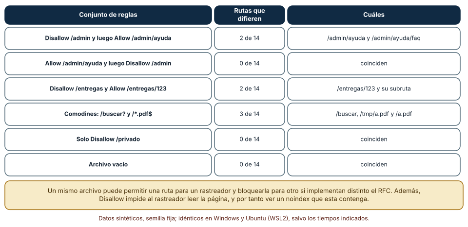
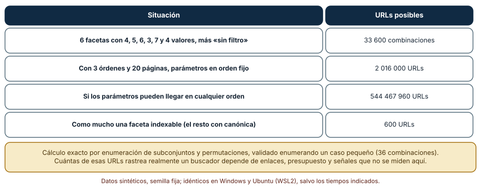
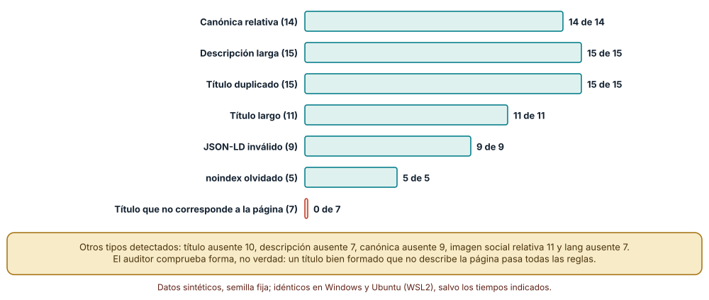

← SE-237 — PWA, caché, offline y sincronización · ↑ Parte 19 · 📚 Índice completo · 🌐 Portal · SE-239 — Taller: construir un flujo web resiliente →
Punto profesional y fundamento pedagógico
Punto profesional. La clase existe para que trates la descubribilidad como una propiedad técnica de la web con tres etapas distintas (rastrear, indexar, mostrar), con herramientas que controlan cosas distintas (robots.txt, noindex, canónicas, mapas del sitio, datos estructurados) y con límites que conviene declarar, de modo que «hacer SEO» no signifique añadir etiquetas sin saber qué problema resuelve cada una.
Por qué aparece aquí. Se sitúa después de PWA, caché, offline y sincronización y antes de Taller: construir un flujo web resiliente: SE-237 hizo que la aplicación funcione sin red; esta clase pregunta cómo se enteran de ella quienes no la conocen y cómo se evita que un buscador vea miles de URLs que no son páginas. Reutiliza las decisiones de URL de SE-234 y de renderizado de SE-231, porque lo que un rastreador ve depende de ambas.
Error conceptual que debe corregir. Creer que bloquear una página en robots.txt la quita del índice, que una etiqueta bien formada describe bien la página o que un mismo archivo robots.txt significa lo mismo para todos los rastreadores: rastrear no es indexar, la forma no es la verdad y las implementaciones difieren.
Secuencia de aprendizaje. Antes de leer los resultados, predices en cuántas de 14 rutas coincide el analizador de Python con la regla de coincidencia más larga del RFC 9309 y cuántas URLs expone una navegación facetada; después comparas ambos algoritmos sobre seis archivos, calculas el número de URLs de seis filtros con y sin política y aplicas un auditor de metadatos a 120 páginas con una mutación cada una.
Evidencia de aprendizaje. seo-log.md con las predicciones, la comparación de analizadores de robots.txt, el cálculo de URLs facetadas y el auditor con sus mutaciones, con explicación causal, contraejemplo y qué hallazgo te haría cambiar una política.
Límite de la conclusión. No se midió posicionamiento, tráfico ni el comportamiento de ningún buscador: el auditor revisa forma y los números de URLs son combinatoria. Las 120 páginas son sintéticas y los dominios son reservados para pruebas. Nada de esto garantiza aparecer en un resultado de búsqueda.
Trazabilidad fuente → afirmación
| Fuente primaria u oficial | Afirmación que respalda | Lo que no prueba |
|---|---|---|
| RFC 9309: Robots Exclusion Protocol | Define la sintaxis de robots.txt y la regla de coincidencia más larga entre Allow y Disallow. | No obliga a ningún rastreador a obedecer y no protege contenido privado. |
| Google Search Central: gestionar la navegación facetada | Describe cómo la navegación facetada genera URLs casi infinitas y cómo contenerlas. | No fija cuántas URLs rastrea realmente un buscador de un sitio. |
| Google Search Central: consolidar URLs duplicadas | Explica cómo indicar una URL canónica y por qué se señalan duplicados. | No garantiza que el buscador elija la canónica indicada. |
| Sitemaps XML (sitemaps.org) | Define el formato para listar las URLs que se quiere que se descubran. | No obliga a rastrear ni a indexar las URLs listadas. |
Antes de empezar
Recupera de SE-237 que la aplicación puede responder sin red y de SE-234 que cada recurso tiene una URL y muchas variantes. La pregunta activa es: ¿qué ve un rastreador, qué le digo que haga con ello y qué parte de lo que declaro no puedo verificar?
Prerrequisitos
- Haber completado
SE-237o poder explicar qué guarda un service worker y cómo se actualiza. - Python 3.11 o posterior; los experimentos usan solo la biblioteca estándar (
urllib.robotparser,re,json,itertools). - Nociones de HTML (
head,title,meta,link) y de cómo se publican URLs.
Problema auténtico
La plataforma tiene un catálogo de cursos público. El equipo bloquea en robots.txt la carpeta /admin para que «no salga en Google» y, tras publicar una página de ayuda que quiere ocultar, añade Disallow y un noindex dentro de ella. La lista de cursos tiene filtros por estado, curso, profesor, semana, nota y etiqueta, y el rastreador pasa días en combinaciones de filtros sin llegar a las páginas de curso. En producción se descubre que una plantilla dejó noindex en todas las páginas. Una persona de comunicación pide «mejorar el título» y alguien pone uno de 90 caracteres con una palabra clave repetida.
Objetivos observables
Al terminar podrás:
- distinguir rastrear, indexar y mostrar, y decir qué mecanismo controla cada etapa;
- escribir un
robots.txty evaluar su efecto con más de un analizador, sabiendo en qué difieren; - calcular cuántas URLs expone una navegación facetada y diseñar la política que la contiene;
- auditar metadatos y datos estructurados de una página y distinguir lo que una herramienta ve de lo que no;
- relacionar el renderizado y las URLs de la aplicación con lo que un rastreador recibe.
Mapa conceptual
Ver la notación fuente del diagrama
flowchart LR
A[Descubrir URL] --> B{robots.txt}
B -->|permitido| C[Rastrear]
B -->|bloqueado| X[No se lee la página]
C --> D{noindex o canónica}
D -->|indexable| E[Indexar]
D -->|excluida o duplicada| Y[No se muestra]
E --> F[Mostrar]
F -->|título y descripción| G[Persona]El mapa se lee de izquierda a derecha: una URL se descubre, se decide si se puede rastrear, se lee y se decide si se indexa, y solo entonces puede mostrarse. El bloqueo en robots.txt corta antes de leer la página, por eso impide ver un noindex que esta contenga.
Temas y por qué importan
| Tema | Por qué cambia una decisión profesional | Evidencia mínima |
|---|---|---|
| Rastrear, indexar y mostrar | Tres etapas, tres mecanismos; confundirlos deja páginas visibles que se quería ocultar o invisibles que se quería mostrar. | Predicción, traza causal y contraejemplo de Rastrear, indexar y mostrar en seo-log.md |
| robots.txt y noindex | Uno limita la lectura y el otro la inclusión; combinarlos mal anula al segundo. | Predicción, traza causal y contraejemplo de robots.txt y noindex en seo-log.md |
| URLs duplicadas y canónicas | Las variantes y los filtros multiplican las URLs; las señales de canonicidad reducen el ruido. | Predicción, traza causal y contraejemplo de URLs duplicadas y canónicas en seo-log.md |
| Metadatos y datos estructurados | Título, descripción y datos estructurados describen la página; su forma se comprueba y su verdad no. | Predicción, traza causal y contraejemplo de Metadatos y datos estructurados en seo-log.md |
| Contenido visible para el rastreador | Lo que existe solo tras ejecutar código puede no verse; los enlaces deben ser enlaces. | Predicción, traza causal y contraejemplo de Contenido visible para el rastreador en seo-log.md |
Conceptos y decisiones
1. Rastrear, indexar y mostrar
Un buscador descubre URLs (por enlaces y mapas del sitio), las rastrea (pide la página), las indexa (decide si la guarda y con qué contenido) y las muestra (la ordena entre los resultados de una consulta). Cada etapa tiene sus controles: robots.txt actúa sobre rastrear; noindex y las canónicas, sobre indexar; el título y la descripción, sobre cómo se muestra. Que una página no se rastree no significa que no pueda aparecer: si otras páginas la enlazan, el buscador puede listar la URL sin su contenido.
2. robots.txt y noindex
robots.txt pide a los rastreadores no leer ciertas rutas; es una convención de cortesía, no una barrera de seguridad, y cada rastreador la interpreta con su implementación. El RFC 9309 fija que, entre reglas que coinciden, gana la de ruta más larga y, a igualdad, Allow. noindex (en una etiqueta meta o una cabecera) pide no incluir la página en el índice, pero para que se obedezca el rastreador tiene que leer la página: si se bloquea en robots.txt, no ve el noindex. Para ocultar contenido privado no se usa ninguno de los dos: se usa autenticación.
3. URLs duplicadas y canónicas
Una navegación facetada (filtros combinables) produce una explosión de URLs que muestran subconjuntos de lo mismo; un buscador puede gastar su presupuesto de rastreo en ellas sin llegar a lo importante. Se contiene combinando medidas: enlaces de filtro que no se siguen, canonical hacia la lista base, noindex en las combinaciones sin valor propio, robots.txt para patrones que nunca interesan y un orden fijo de parámetros. La canónica es una señal, no una orden: el buscador puede ignorarla si la considera incoherente.
4. Metadatos y datos estructurados
El title y la meta description describen la página en los resultados; la longitud que se muestra depende del ancho en píxeles y no de un número de caracteres. La etiqueta canonical declara la forma preferida; las etiquetas Open Graph controlan la vista previa al compartir; y los datos estructurados (JSON-LD con vocabulario de schema.org) describen entidades. Todo esto se puede comprobar en su forma (¿existe? ¿es JSON válido? ¿la URL es absoluta?) y no en su verdad (¿el título describe la página?).
5. Contenido visible para el rastreador
Un rastreador moderno puede ejecutar JavaScript, pero con límites y con retraso; el contenido que existe en el primer HTML se procesa antes y con menos riesgo. Los enlaces deben ser elementos a con href reales, no div con un manejador; la navegación por JavaScript sin URL no es descubrible. La decisión de renderizado de SE-231 y las URLs de SE-234 son aquí SEO: una página con contenido en el HTML inicial y una URL canónica estable es más fácil de descubrir, de compartir y de mantener.
Dos lecturas del mismo robots.txt
Se escribieron seis conjuntos de reglas (Disallow seguido de Allow, al revés, un Disallow amplio con un Allow estrecho, comodines, un Disallow simple y un archivo vacío) y se evaluaron 14 rutas con dos implementaciones: el analizador urllib.robotparser de la biblioteca estándar de Python y una función escrita con la regla de coincidencia más larga del RFC 9309, con soporte de * y $.
def rfc9309(reglas, path):
mejor = None
for tipo, pat in reglas:
p = re.escape(pat).replace(r"\*", ".*")
if p.endswith(r"\$"): p = p[:-2] + "$"
if re.match(p, path):
clave = (len(pat), tipo == "allow")
if mejor is None or clave > mejor[0]: mejor = (clave, tipo)
return mejor is None or mejor[1] == "allow"Resultado, idéntico en Windows (CPython 3.12.9) y en Ubuntu bajo WSL2 (3.12.3): de las 84 decisiones (6 conjuntos × 14 rutas) difieren 7. Con Disallow: /admin antes de Allow: /admin/ayuda, el analizador de Python, que aplica la primera regla que coincide, bloquea /admin/ayuda y /admin/ayuda/faq y la regla del RFC los permite; con Disallow: /entregas y Allow: /entregas/123 difieren /entregas/123 y su subruta; con los comodines /buscar? y /*.pdf$, difieren /buscar, /tmp/a.pdf y /a.pdf (el analizador de Python no interpreta comodines y descarta la ? vacía). Con Allow antes de Disallow, Disallow solo o un archivo vacío no hay diferencias.

Cómo leer la figura. Cada fila es un archivo de reglas; las columnas cuentan en cuántas de 14 rutas difieren los dos algoritmos y cuáles son. Dónde deja de valer: son dos implementaciones, no todos los rastreadores; cada buscador tiene la suya y puede documentar variaciones. El archivo es el mismo, el resultado no: por eso se evita el orden ambiguo (poner el Allow más específico y comprobar con los rastreadores que importan). El experimento no mide si un rastreador real obedece.
Cuántas URLs expone una navegación facetada
Se tomó una lista con seis filtros de 4, 5, 6, 3, 7 y 4 valores (más «sin filtro»), tres órdenes y veinte páginas. Con los parámetros siempre en el mismo orden hay 5 × 6 × 7 × 4 × 8 × 5 = 33 600 combinaciones de filtros, y con orden y paginación, 2 016 000 URLs. Si los parámetros pueden llegar en cualquier orden, cada subconjunto de filtros activos admite además todas sus permutaciones y el total es 544 467 960. Si solo se permite indexar como mucho una faceta (y el resto lleva canonical a la lista base), quedan 600 URLs. La fórmula se validó contra la enumeración de un caso pequeño (36 combinaciones).
def distintas_con_orden(facetas):
total = 0; ks = list(facetas.values())
for r in range(0, len(ks) + 1):
for sub in itertools.combinations(ks, r):
prod = 1
for k in sub: prod *= k
fact = 1
for i in range(2, r + 1): fact *= i
total += prod * fact
return total
Cómo leer la figura. Cada fila es una política; la cifra es el número de URLs que quedan al alcance de un rastreador. Dónde deja de valer: es combinatoria de lo que se puede formar, no lo que un buscador rastrea: sin enlaces que lleven a las combinaciones raras, no las descubre. Pero la cifra explica por qué una política de URLs (SE-234) es una decisión de descubribilidad: ordenar los parámetros multiplica por cientos lo que hay que rastrear.
Qué detecta un auditor de metadatos
Se generaron 120 páginas sintéticas, cada una con una mutación de entre doce tipos (título ausente, largo o duplicado, descripción ausente o larga, canónica ausente o relativa, noindex olvidado, JSON-LD inválido por una coma final, imagen social relativa, lang ausente y un título que no corresponde a la página), con semilla fija. El auditor tiene reglas de forma para todos los tipos salvo el último: detecta 113 de 120; las 7 que no detecta son las páginas cuyo título describe otra cosa (por ejemplo, «Cómo hacer pasta fresca en casa» en la página de una entrega).
j = re.findall(r'ld\+json">(.*?)</script>', src)
for x in j:
try: json.loads(x)
except ValueError: prob.add("jsonld invalido")
Cómo leer la figura. Cada barra es el número de páginas con un defecto de ese tipo que el auditor señaló; la barra roja es el único tipo que no detecta. Dónde deja de valer: el auditor se escribió sabiendo qué mutaciones se aplicarían y comprueba longitudes en caracteres, no en píxeles, que es lo que realmente corta un resultado; no valida el vocabulario de schema.org ni que los datos estructurados sean ciertos. Un título bien formado y falso pasa todas las reglas.
Definiciones de trabajo
- rastrear: pedir una página para leer su contenido y sus enlaces.
- indexar: decidir qué guardar de una página rastreada para poder devolverla en búsquedas.
- URL canónica: URL preferida de un conjunto de duplicados, declarada con
rel="canonical"o con una redirección. noindex: directiva que pide no incluir una página en el índice; solo se obedece si el rastreador puede leerla.- navegación facetada: conjunto de filtros combinables que produce muchas URLs de listas que se solapan.
Las definiciones son operativas para esta clase y deben contrastarse con la documentación enlazada al final.
Ejemplo mínimo
Evalúa con el analizador de Python un robots.txt con Disallow y Allow y predice si /admin/ayuda queda permitida.
from urllib.robotparser import RobotFileParser
rp = RobotFileParser()
rp.parse(["User-agent: *", "Disallow: /admin", "Allow: /admin/ayuda"])
print(rp.can_fetch("*", "https://ejemplo.test/admin/ayuda"))Con el orden dado, el analizador de Python aplica la primera regla que coincide y responde False, mientras que la regla del RFC 9309 (la más larga) la permitiría. Registra versión del intérprete y salida; invierte el orden de las dos líneas y predice el resultado.
Ejemplo profesional
La plataforma publica un robots.txt que bloquea solo patrones que nunca interesan (/buscar?, /api/) con los Allow más específicos primero y lo comprueba con dos analizadores. Las páginas privadas se protegen con autenticación y devuelven noindex en la cabecera, sin estar bloqueadas, para que el rastreador pueda leer esa directiva. La lista de cursos tiene un orden fijo de parámetros, una canónica a la lista base en cada combinación de filtros y enlaces de filtro con rel="nofollow". El mapa del sitio lista solo las URLs canónicas, y un auditor revisa en la integración continua que cada página tenga título, descripción, canónica absoluta y JSON-LD válido.
Compara el caso normal con una página de ayuda que se quiere ocultar, una combinación de seis filtros y una plantilla que deja un noindex. La política es apropiada cuando esos tres casos tienen una respuesta probada; es frágil cuando alguien «añade etiquetas» sin saber qué etapa controla cada una.
Práctica guiada
- Escribe seis conjuntos de reglas de
robots.txty 14 rutas de la plataforma. - Predice en cuántas de las 84 decisiones difieren el analizador de Python y la regla del RFC 9309 y escribe el número antes de ejecutar.
- Implementa la regla de coincidencia más larga con
*y$y compara con el analizador. - Calcula las URLs de tu lista de filtros con orden fijo, con orden variable y con una faceta indexable.
- Escribe un auditor de metadatos con ocho reglas y aplícalo a 120 páginas con mutaciones de semilla fija.
- Identifica qué mutación no detecta ninguna regla y qué haría falta para verla.
- Entrega
seo-log.mdy pide a otra persona que proponga un defecto de metadatos que tu auditor no vea.
Ejercicios
- Rastreo: diseña un
robots.txtpara ocultar/adminy mostrar/admin/ayuday comprueba con ambos algoritmos. - Facetas: calcula las URLs si la lista añade un séptimo filtro de 5 valores y decide qué política mantienes.
- Canónicas: escribe una regla que, dada una URL con filtros, devuelva su canónica y compruébala con las 2400 variantes de
SE-234. - Metadatos: diseña una revisión humana de títulos de 20 páginas en cinco minutos y explica qué parte sigue siendo juicio.
Reto verificable
Entrega seo-log.md con la comparación de analizadores, el cálculo de URLs facetadas con su política y el auditor con sus mutaciones. Se aprueba si otra persona ejecuta el código desde un checkout limpio, obtiene las mismas cifras con las mismas semillas y puede señalar qué evidencia te haría cambiar una política. No se aprueba por una lista de etiquetas ni por afirmar que una página «posiciona mejor».
Caso conductor
La aplicación de entregas con conectividad irregular es sobre todo privada, pero tiene un catálogo y una ayuda públicos. Esta clase deja su política de rastreo, sus canónicas y su auditor de metadatos. SE-239 los integra en el taller y SE-240 los comprueba en el proyecto. Cambia después una sola decisión, el orden de los parámetros de la lista, de libre a fijo, y recalcula las URLs expuestas.
Preguntas frecuentes
¿Si bloqueo una página en robots.txt desaparece de los resultados?
No necesariamente: el buscador puede listar la URL si otras páginas la enlazan, sin contenido. Para sacarla del índice hay que dejarla rastreable con noindex o eliminarla; para protegerla, autenticarla.
¿Cuántos caracteres debe tener el título?
No hay un número: los resultados cortan por ancho en píxeles, que depende de las letras. Una referencia habitual es mantenerlo corto y descriptivo y que lo esencial vaya al principio; lo que importa es que describa la página.
¿La URL canónica es una orden?
No: es una señal que el buscador puede ignorar si es incoherente (por ejemplo, una canónica a una página con otro contenido). Se refuerza con enlaces internos coherentes y redirecciones.
¿Los datos estructurados mejoran la posición?
Ayudan a entender la página y pueden dar resultados enriquecidos, pero no hay garantía de posición. Deben describir contenido visible y verdadero: marcar algo que la página no dice puede ser contraproducente.
Fallo controlado y diagnóstico
Reproduce el fallo clásico de la clase: bloquear en robots.txt una página con noindex. Escribe Disallow: /ayuda/interna y añade un noindex en esa página.
Registra síntoma, entrada mínima, hipótesis, observación que descarta cada hipótesis, causa, corrección y prueba de regresión. Síntoma: la URL de la página interna aparece en un buscador sin contenido. Hipótesis rivales: (a) el noindex no está bien escrito; (b) el rastreador no puede leer la página y por tanto no ve el noindex. Prueba: evalúa la URL con el analizador y comprueba que está bloqueada; quita el Disallow y observa que el rastreador puede leer el noindex. Conclusión: la causa es el bloqueo que impide ver la directiva. Regresión: deja la página rastreable con noindex (o autenticada) y añade una prueba que falle si una URL con noindex aparece bloqueada. No cambies a la vez el bloqueo y la canónica: no sabrás qué corrigió el problema.
Errores comunes y cómo corregirlos
| Síntoma | Causa probable | Corrección |
|---|---|---|
| Una URL bloqueada aparece sin contenido | Disallow en vez de noindex o autenticación | Dejar rastreable con noindex o proteger con autenticación |
| El rastreador se pierde en filtros | Navegación facetada sin contención | Orden fijo de parámetros, canónica a la lista base y noindex en combinaciones |
| Todo el sitio desaparece tras un despliegue | Plantilla con noindex heredada de preproducción | Auditar metadatos en la integración continua |
robots.txt se comporta distinto según el rastreador | Orden ambiguo de Allow y Disallow o comodines | Escribir el Allow más específico y probar con los rastreadores que importan |
| El título del resultado no corresponde a la página | Título genérico o de otra plantilla | Un título descriptivo y único por página y una revisión humana |
Entorno y archivos clave
work/SE-238/
├── README.md
├── seo/
│ ├── robots.py
│ ├── facetas.py
│ └── metadatos.py
├── tests/test_robots.py
└── evidence/seo-log.mdEl README declara plataforma, versión de Python, semillas y comandos. Los experimentos usan solo la biblioteca estándar y se ejecutaron con CPython 3.12.9 en Windows 11 y 3.12.3 en Ubuntu bajo WSL2: las salidas fueron idénticas. No se contactó con ningún buscador ni se rastreó ningún sitio real.
Seguridad, ética y accesibilidad
robots.txtes público: listar en él rutas sensibles las revela; protege el contenido con autenticación, no con una petición de cortesía;- una página que solo se descubre por JavaScript y no tiene un enlace real tampoco es accesible por teclado ni por lectores de pantalla: la descubribilidad y la accesibilidad comparten causas;
- no uses datos estructurados que prometan algo falso (valoraciones, precios) ni ocultes texto para rastreadores: es engaño y puede acarrear sanciones;
- los ejemplos usan dominios reservados para pruebas y páginas sintéticas; no incluyas direcciones reales de estudiantes ni de la plataforma en la evidencia;
- un título claro y un texto alternativo útil benefician a todas las personas, no solo a los buscadores.
Puente hacia el trabajo con agentes
Un agente al que se le pide «mejora el SEO» añadirá etiquetas, un robots.txt genérico y a veces un noindex o un Disallow que contradicen otra parte, sin comprobar cuál controla qué etapa. Pídele que explique qué etapa controla cada cambio, que compruebe el robots.txt con más de un analizador, que calcule las URLs expuestas por la navegación y que ejecute el auditor sobre su propio resultado. Revisa especialmente cualquier título o descripción generados: son verosímiles y pueden no describir la página, que es lo que ninguna regla de forma detecta.
Transferencia
Traslada el experimento a otra superficie que otros descubren (el índice de un repositorio, un catálogo de datos, la documentación de una API): cambia las señales, pero conserva el método de separar etapas, calcular cuántas direcciones se exponen y auditar metadatos con mutaciones. La transferencia está lograda cuando puedes explicar qué parte de tu política dependía de los buscadores web y cuál de la idea de separar descubrir, leer y mostrar.
Evaluación y evidencia
| Criterio | Evidencia para aprobar |
|---|---|
| comprensión | explicación de rastrear, indexar y mostrar y del mecanismo que controla cada etapa |
| corrección | cifras reproducibles de decisiones de robots, URLs facetadas y mutaciones detectadas con las mismas semillas |
| diseño | política de rastreo, canónicas y auditoría de metadatos documentadas |
| diagnóstico | reproducción del bloqueo con noindex con regresión |
| incertidumbre | declaración de lo que no se midió (buscadores reales, posicionamiento) y de lo que el auditor no ve |
| reproducibilidad | versiones, comandos, salida y límites declarados |
Fuentes
- RFC 9309: Robots Exclusion Protocol — sintaxis y regla de coincidencia más larga; autoridad: IETF.
- Google Search Central: introducción a robots.txt — qué hace y qué no hace
robots.txt; autoridad: Google Search Central. - Google Search Central: gestionar la navegación facetada — contener URLs generadas por filtros; autoridad: Google Search Central.
- Google Search Central: consolidar URLs duplicadas — canónicas como señal; autoridad: Google Search Central.
- Sitemaps XML (sitemaps.org) — formato del mapa del sitio; autoridad: sitemaps.org.
- Open Graph protocol — metadatos de vista previa al compartir; autoridad: Open Graph.
Cada fuente respalda el mecanismo indicado; ninguna demuestra que la política de la clase mejore la posición de la plataforma en un buscador ni que un rastreador concreto obedezca un archivo.
- Python:
urllib.robotparser— analizador usado en el experimento. - Python:
itertools— combinaciones y permutaciones de filtros.
Límites y siguiente paso
Se ejecutaron tres experimentos con datos sintéticos en Windows y Ubuntu (WSL2) con resultados idénticos. No se rastreó ningún sitio ni se consultó ningún buscador: las 14 rutas, los seis filtros y las 120 páginas son construcciones del autor y el auditor comprueba forma, no verdad. La siguiente clase reúne lo aprendido en un taller para construir un flujo web resiliente de punta a punta.
Glosario
- rastrear: pedir una página para leer su contenido y sus enlaces.
- indexar: decidir qué guardar de una página rastreada para poder devolverla en búsquedas.
- URL canónica: URL preferida de un conjunto de duplicados, declarada con
rel="canonical"o con una redirección. noindex: directiva que pide no incluir una página en el índice; solo se obedece si el rastreador puede leerla.- navegación facetada: conjunto de filtros combinables que produce muchas URLs de listas que se solapan.
← SE-237 — PWA, caché, offline y sincronización · ↑ Parte 19 · 📚 Índice completo · 🌐 Portal · SE-239 — Taller: construir un flujo web resiliente →